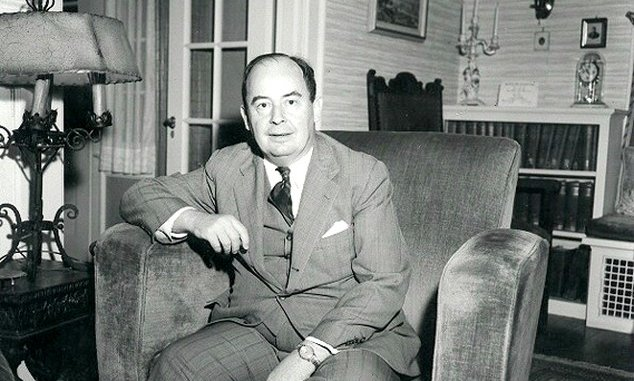
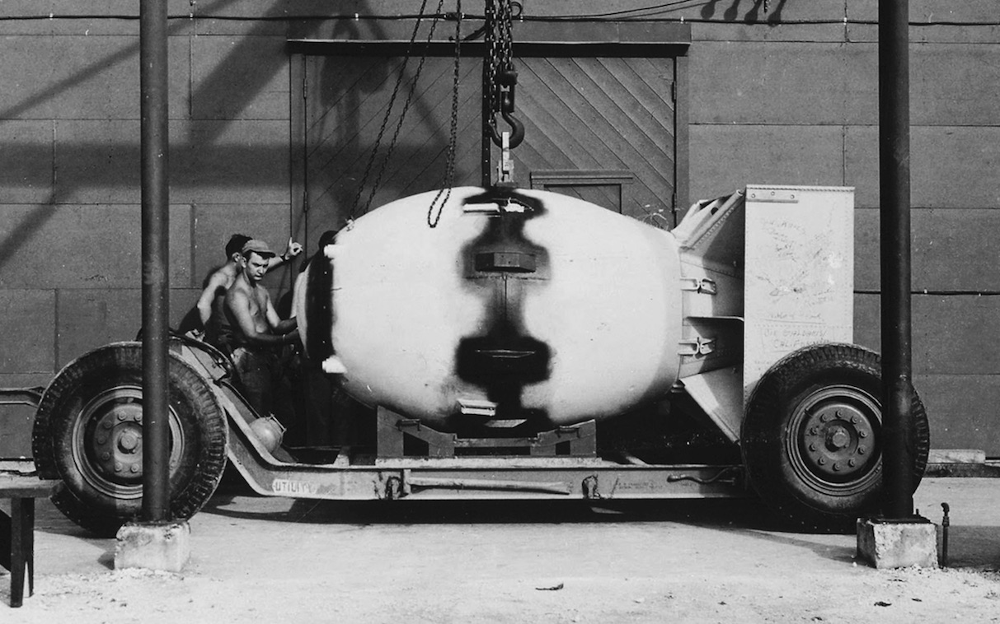

Amerika
Amerikai Tevékenysége
1930-ban meghívták vendégprofesszornak az Egyesült Államokba, a Princetoni Egyetemre. Hamarosan az ottani egyetem professzora lett (1930-1931), majd az újonnan megnyílt princetoni Institute for Advanced Studies professzora (1933-1955) - John von Neumann néven -, ahol a világ legkiválóbb tudósai gyűltek össze. A második világháború idején addigi tevékenysége mellett - számos más természettudóshoz hasonlóan - ő is bekapcsolódott a haditechnikai kutatásokba. Rendszeresen járt Los Alamosba, ahol részt vett az első atombomba megépítésével kapcsolatos titkos programban, az előállítással kapcsolatos elméleti munkában. Az 1930-as évek végétől érdeklődése egyre jobban az alkalmazott matematikai problémák felé fordult. 1951-től 1954-ig az Amerikai társaság elnöke volt. Megkapta az Egyesült Államok Érdemérmét (1954), amiért útjára indította a 20. század második felének informatikai forradalmát. 1955-ben az öttagú Atomenergia Bizottság (AEC) tagjává nevezték ki, amely akkor a legmagasabb szintű kormánymegbízatásnak számított egy tudós számára. Az atom- és hidrogénbombák kísérleti robbantásainál az ott keletkező lökéshullámok tanulmányozása során olyan bonyolult matematikai összefüggéseket fedezett fel, amelyek a klasszikus módszerekkel már nem voltak megoldhatók. Ekkor fordult érdeklődése a nagysebességű elektronikus számítások lehetősége felé.
Tudományos pályafutása kezdetén behatóan foglalkozott kvantumelmélettel, a matematika alapjaival, halmazelmélettel és matematikai logikával. Tőle származik a halmazelmélet egzakt megalapozása. Jelentős eredményeket ért el az ergodelméletben, és kifejlesztette a „folytonos geometria” elméletet is.A koreai háború idején elméletének a kiértékelése volt az oka, hogy az USA nem támadta meg Kínát. Szerkesztője volt a Princetonben megjelenő Annals of Mathematics és az Amszterdamban kiadott Compositio Mathematica című tudományos folyóiratoknak. Számos tudományos akadémia és társaság választotta tagjának, illetve díszdoktorának. Foglalkozott tudománypolitikai kérdésekkel, kifejtette a humánum iránti elkötelezettségét tükröző nézeteit a tudományos és technikai fejlődés filozófiai és morális problémáiról.
Manhattan terv

A Manhattan terv (Manhattan Project) a második világháborúban az atomfegyver kifejlesztésére szolgáló közös vállalkozás, melyben részt vett az Amerikai Egyesült Államok, Nagy-Britannia és Kanada. Megindításáról 1942-ben döntött Franklin D. Roosevelt elnök a magyar Szilárd Leó kezdeményezésére (akit ebben Albert Einstein is támogatott). Szilárd a német atombomba-kutatásokra és ennek veszélyeire hívta fel a figyelmet. A projekt vezetője Robert Oppenheimer lett, aki számos neves amerikai tudós mellett magyar, olasz és más egyéb származású fizikust választott ki a projektben való részvételre. A Manhattan terv katonai vezetője Leslie R. Groves mérnök-tábornok volt.
A terv során Los Alamos (Új-Mexikó) lett a kutatás központja. A plutónium előállítása Hanfordban (Washington állam) történt. Oak Ridge-ben (Tennessee) urándúsító üzemet hoztak létre.
Az első atombomba
Az új-mexikói Alamogordo mellett 1945. július 16-án robbantották fel az első atombombát. Ez plutóniumbomba volt, és azért döntöttek a kísérleti robbantás mellett, mert a plutónium implóziós felrobbantásának sikeressége kevésbé volt biztos, mint az uránbomba egyszerűbb, „összelövéses” technikája.
Truman elnök a tervben résztvevők ellenzésének dacára döntött az új fegyver éles bevetéséről Japán ellen, amire 1945. augusztus 6-án Hirosima és 9-én Nagaszaki felett sor is került. Az előbbi egy urán-, az utóbbi egy plutóniumbomba volt.
Az atomtámadások azonnali következménye több mint kétszázezer civil áldozat volt, és ez döntő szerepet játszott Japán feltétel nélküli kapitulációjában.
English:
In 1930, he was invited to Princeton University as a visiting professor. He soon became a professor there (1930-1931), then a he became a professor at the newly opened Princeton Institute for Advanced Studies (1933-1955) - under the name John von Neumann - where the world's most outstanding scientists gathered. During the Second World War, in addition to his activities up to that point - like many other natural scientists - he also got involved in military technology research. He regularly visited Los Alamos, where he participated in the secret program related to the construction of the first nuclear bomb. From the end of the 1930s, his interest turned more and more towards applied mathematical problems. He received the United States Medal of Merit (1954) for starting the IT revolution of the second half of the 20th century. In 1955, he was appointed a member of the five-member Atomic Energy Commission (AEC), then the highest government appointment for a scientist. During the study of the shock waves generated during the experimental explosions of nuclear and hydrogen bombs, he discovered complex mathematical relationships that could no longer be solved using classical methods. That's when his interest turned to the possibility of high-speed electronic calculations.
At the beginning of his career, he dealt extensively with quantum theory, the foundations of mathematics, set theory and mathematical logic. The exact foundation of set theory comes from him. He achieved significant results in ergodic theory and also developed the "continuous geometry" theory. During the Korean War, the evaluation of his theory was the reason why the USA did not attack China. He was the editor of the scientific journals Annals of Mathematics, published in Princeton, and Compositio Mathematica, published in Amsterdam. Many scientific academies and societies elected him as a member or honorary doctorate. He dealt with issues of science policy and expressed his views on the philosophical and moral problems of scientific and technical development, reflecting his commitment to humanity.
Manhattan Project
The Manhattan Project was a joint venture for the development of nuclear weapons in the Second World War, in which the United States of America, Great Britain and Canada participated. President Franklin D. Roosevelt decided to start it in 1942 at the initiative of the Hungarian Leó Szilárd (who was also supported by Albert Einstein). Szilárd drew attention to German nuclear bomb research and its dangers. The head of the project was Robert Oppenheimer, who selected Hungarian, Italian and other physicists to participate in the project in addition to many famous American scientists. The military leader of the Manhattan Project was Engineer General Leslie R. Groves.
During the project, Los Alamos, New Mexico became the center of research. The plutonium was produced in Hanford, Washington. A uranium enrichment plant was established in Oak Ridge, Tennessee.
The first nuclear bomb
On July 16, 1945, the first nuclear bomb was detonated near Alamogordo, New Mexico. It was a plutonium bomb, and the decision was made to detonate it experimentally because the success of detonating plutonium by implosion was less certain than the simpler, "shoot-together" technique of the uranium bomb.
Despite the opposition of those involved in the project, President Truman decided to use the new weapon directly against Japan, which took place on August 6, 1945, over Hiroshima and over Nagasaki on the 9th of August. The former was a uranium bomb, the latter a plutonium bomb.
The immediate consequences of the nuclear attacks were more than two hundred thousand civilian casualties, and this played a decisive role in Japan's unconditional capitulation.